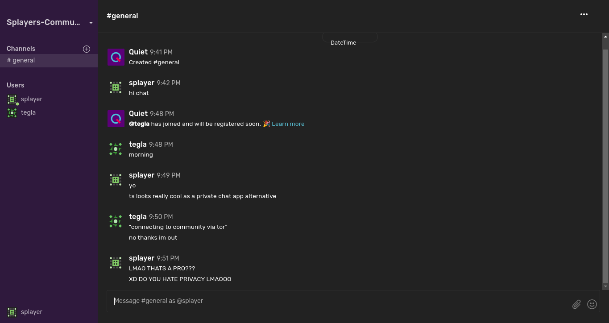

This is my first time writing a proper blog-type thingy so pardon me if its shitty or something, you can reach out
and give me advice. I am always open to them.
Anyways, I recently discovered a very interesting FOSS project called Quiet. It was interesting to me because as a "privacy enthusiast" (more larp (god i
love this word lmao)) i always look for good alternatives to popular corporate driven apps (not that i am
gonna use them anyways most of the time due to lack of proper community). Quiet was highlighted to me because of
the features it claims to provide. The UI looks COMPLETELY like slack (fun fact: i have never used slack lol) but
more simpler as it lacks many features right now.

The thing with quiet is that all data is transferred peer-to-peer between the users INSIDE a Tor network and also
E2E Encrypted! CRAZY RIGHT? Although the readme says it shouldn't be used when security and privacy is critical,
its still amazing to me as not many apps do this lol. This can become a massive W for the people who want a
decentralized chat app. The con is that by the looks of it Quiet still seems to be in an infant state as many core
features which are common in almost every chat app are lacking in it. They are planned and i am sure Quiet will
become very good once it implements these basic features.
I used quiet using an appimage on Void Linux. It is written using typescript and i think the linux frontend uses
electron(?)(EWWWW RIGHT???). I might package it for void linux later maybe idek. It is available for Windows, Mac,
Android and iOS too which is quite good, should be a BSD package too lol.
We ALL know how Sessions is gonna die soon :( so i think Quiet can definetely swoop in and capture the
market share. Session died because of server maintainence cost but Quiet should'nt have all this problems since it
utilises p2p and tor network. I personally loved sessions the only time i used it. I also hope the quiet team
focuses on making the UI less like slack because lets be real, it might give a lot of people PTSD.
This might look like a paid PR but i am genuinely so exicted to use this.
Last Edited: 10:52 PM 30 May 2026